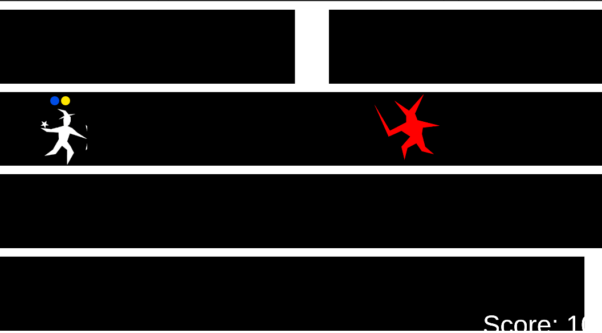

Boundless Magic

Description
Boundless Magic is a 2D side-scrolling endless runner for mobile, where the player evades obstacles, fights enemies and tries to escape from the dungeon and get the highest score. The player can cast multiple powerful spells, that aid him in various ways during the run.
Spells behave like combos. To cast a spell, the player needs to kill certain enemy types on their way e.g. two red enemies and one blue, but killing enemies in sequence is not required. The player can choose and equip up to three of their favourite spells. The combinations for each spell are randomly picked from a predesigned set. During each run, the player is required to kill different set of enemies, but spell behaviour stays the same.
Boundless Magic is targeted for every endless runner lover and enthusiast of the genre’s classics (Subway Surfers, Jetpack Joyride, Temple Run). We aim to captivate them by keeping well established gameplay and spicing it up with semi-tactical combat.
Team members
Jakub Biniek – leader, 2D Art, initial game idea, core gameplay mechanics.
Jakub Kowalski – game and systems design, documentation, help with core mechanics.
Marcin Radosz – programming, git repository maintaining.